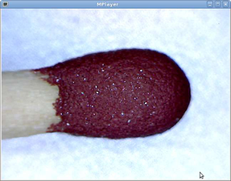
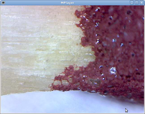

USB-Mikroskop
Dieser Artikel wurde für die folgenden Ubuntu-Versionen getestet:
Ubuntu 14.04 Trusty Tahr
Zum Verständnis dieses Artikels sind folgende Seiten hilfreich:
Das Bresser Digital Hand Micro 1.3MP ist ein kleines USB-Mikroskop mit den Vergrößerungsstufen x20 und x200. Es dient in diesem Artikel als Beispiel für die Inbetriebnahme eines USB-Mikroskops. Es gibt auch ähnliche Mikroskope, teilweise mit anderen Vergrößerungsstufen. Diese lassen sich genauso problemlos nutzen, sofern sie vom Linux UVC driver  unterstützt werden.
unterstützt werden.
Inbetriebnahme¶
Das Mikroskop ist technisch gesehen eine Webcam. Die Eingabe von
lsusb
in einem Terminal [1] meldet
Bus 001 Device 004: ID 0ac8:3420 Z-Star Microelectronics Corp.
Der verwendete Chipsatz mit der USB-ID 0ac8:3420 wird ab Kernel 2.6.26 oder neuer unterstützt. Daher sollte das Mikroskop out-of-the-box unterstützt werden. Falls es Probleme mit der Erkennung geben sollte, kann man nach folgender Anleitung vorgehen.
Verwendung¶
Um das Mikroskop zu verwenden, kann man eines der im Artikel Webcam genannten Programme verwenden.
Beispiel¶
Unter Verwendung der Befehlszeile [1]:
mplayer tv:// -tv device=/dev/video0:fps=30 -nosound
wurden die beiden Beispielbilder auf dieser Seite erzeugt. Wenn der verwendete Computer bereits eine eingebaute Webcam besitzt, lautet der Gerätename device=/dev/video1.
|  |
| Streichholz in 20-facher Vergrößerung |
|  |
| Streichholz in 200-facher Vergrößerung |
Links¶
Oasis UMO19 MCU003 USB microscope
- Beispiel für ein Mikroskop mit den Vergrößerungen x20 und x400USB Mikroskop Oasis UMO19 unter Linux
 - Blogeintrag, 06/2010
- Blogeintrag, 06/2010
- Erstellt mit Inyoka
-
 2004 – 2017 ubuntuusers.de • Einige Rechte vorbehalten
2004 – 2017 ubuntuusers.de • Einige Rechte vorbehalten
Lizenz • Kontakt • Datenschutz • Impressum • Serverstatus -
Serverhousing gespendet von